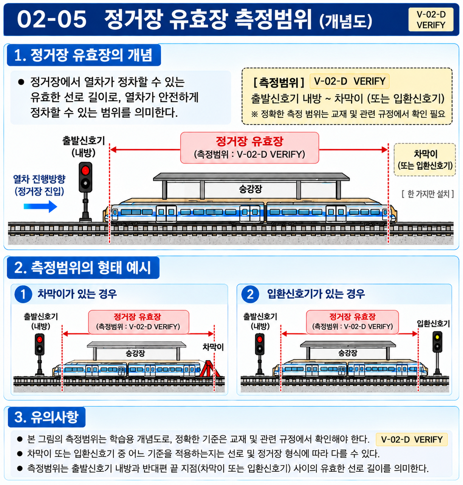
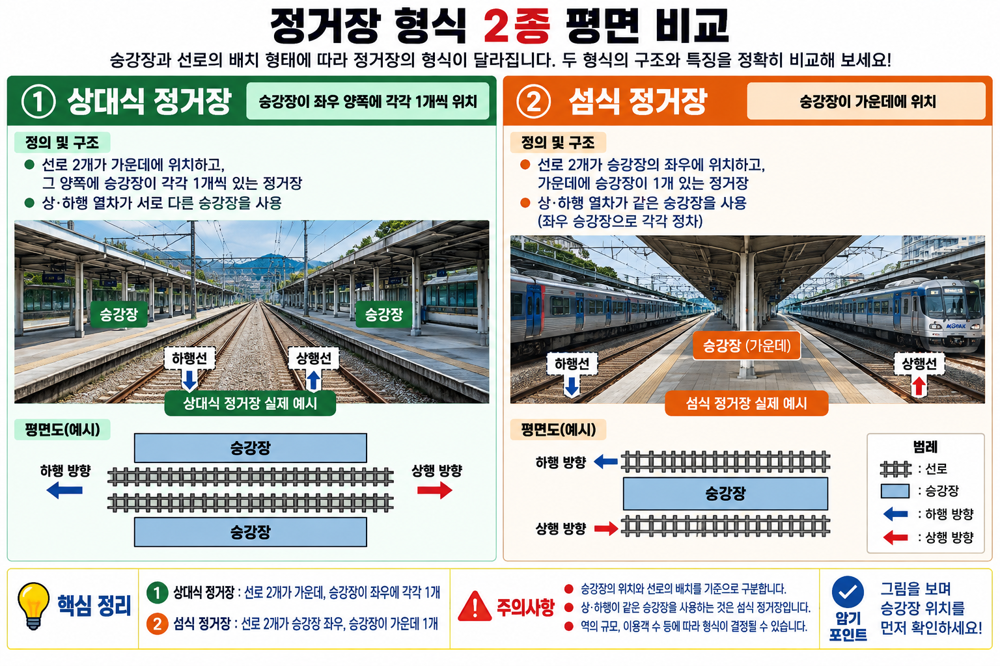
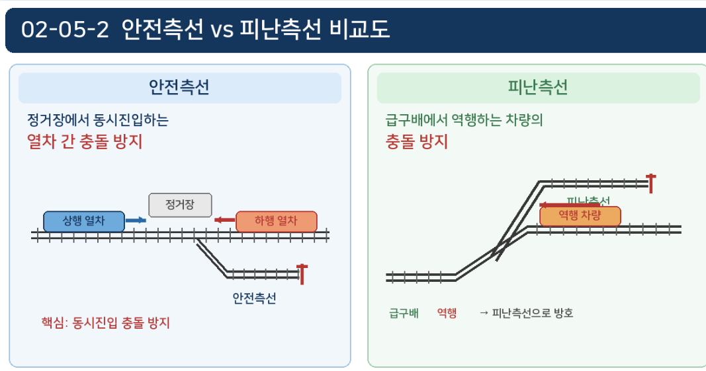

GATE5 · PART 02 · UNIT 02-05
정거장·선로설비 개요
유효장·차막이, 안전측선 vs 피난측선, 낙석방지시설
PART 02 선로계획·설계
★★☆ 중요
FINAL PUBLISH v1.2
§1. 핵심 용어정의
용어정의 | 유효장(有效長)
열차가 안전하게 정차·대피할 수 있는 선로의 실제 가용 길이. 「철도의 건설기준에 관한 규정」 제21조 제2항에 따라 차량접촉한계표·출발신호기·차막이 연결기받이 전면을 기준으로 측정한다.
용어정의 | 내방(內方)
신호기를 기준으로 열차가 진행하는 방향의 안쪽, 즉 역 구내 쪽을 가리키는 방향 표현.
용어정의 | 차막이(車擋, Buffer Stop)
선로의 끝단에 설치하는 안전 구조물. 열차가 선로 끝을 넘어 이탈하지 않도록 막는다. 유효장의 끝점이기도 하다.
용어정의 | 역행(逆行)
열차가 경사진 선로(구배)에서 제동 실패 등으로 인해 원래 진행 방향의 반대로 미끄러져 내려가는 현상.
§2. 차막이·유효장 (SOURCE 35·36)

VIS-124 정거장 유효장 측정 범위 (SOURCE 35·36)
| 본선 유효장 (제21조 제2항) | |
|---|---|
| ① 양단에 차량접촉한계표가 있는 경우 | 양 차량접촉한계표 사이의 거리 |
| ② 한쪽 끝에 출발신호기가 있는 경우 | 차량접촉한계표 ~ 출발신호기 위치 |
| ③ 한쪽 끝에 차막이가 있는 경우 | 차량접촉한계표 또는 출발신호기 ~ 차막이 연결기받이 전면 |
| 측선 유효장 (제21조 제2항) | |
| ① 양단 분기기 | 전·후 차량접촉한계표 사이의 거리 |
| ② 끝단에 차막이가 있는 경우 | 차량접촉한계표 ~ 차막이 연결기받이 전면 |
차막이(Buffer Stop): 선로 끝단에 설치하는 안전 구조물로 열차가 선로를 이탈하지 않도록 막는다. 유효장 끝점 기준은 차막이 자체가 아니라 연결기받이 전면이다.
두단식 승강장: 종착역·차고지 전용 — 차막이 구조 (SOURCE 36)
오답 선지 판별
X"유효장 = 역 구내 전체 선로 길이" → 오답. 차량접촉한계표·출발신호기·차막이 연결기받이 전면을 기준으로 산정한다.
X"유효장 = 출발신호기 내방~차막이(또는 입환신호기)" → 오답. 입환신호기는 유효장 종점 기준이 아니다. 제21조 제2항 기준(①~③)으로 판단한다.
X"대피선은 유효장 적용 대상이 아니다" → 오답. 측선도 유효장 적용 대상.
§3. 정거장 형식 (SOURCE 32)

VIS-035 정거장 형식 비교 (SOURCE 32)

정거장의 종류 — 핵심개념 18
📹 참고영상 | 분기기·전철기·선로전환기 작동 원리
차륜이 분기기를 통과하면서 진행 선로를 바꾸는 구조와 선로전환 원리를 시각적으로 확인한다.
- 분기기 = 열차를 한 선로에서 다른 선로로 유도하는 궤도설비
- 포인트부 전환에 따라 진행 진로가 달라짐
- 선로전환기 = 분기기의 가동 부분을 전환시키는 장치
※ 보조 학습 콘텐츠 — 영상 자막은 시험 정답 근거로 사용하지 않음
※ 분기기 제작·구조 상세는 PART 04-08 학습 시 PRIMARY 위치 재조정 예정
※ 분기기 제작·구조 상세는 PART 04-08 학습 시 PRIMARY 위치 재조정 예정
§4. 신호기 가시거리
신호기별 가시거리 세부 기준(600m/200m/400m/100m 등)은 PART 07 철도신호에서 상세 학습한다.
§5. 안전측선 vs 피난측선 (SOURCE 31)

VIS-125 안전측선·피난측선 비교도 (SOURCE 31)
| 시설 | 목적 | 설치 기준 | 암기 |
|---|---|---|---|
| 안전측선 | 정거장에서 동시진입하는 열차 간 충돌 방지 | 단선구간 또는 2개 이상의 열차·차량이 동시에 출발·진입하는 정거장 구내에 설치 (제21조 제3항) | 안충(安衝) |
| 피난측선 | 급구배에서 역행(逆行)하는 차량의 충돌 방지 | 급구배 구간 종단에 설치 | 피역(避逆) |
| 차막이 | 선로 끝단 안전장치 — 열차 이탈 방지 | 선로 끝단 | 끝단 고정 |
오답 선지 판별
X"안전측선 = 역행 차량을 막는 시설" → 오답. 역행 방호는 피난측선.
X"피난측선 = 동시진입 충돌 방지" → 오답. 동시진입 충돌 방지는 안전측선.
O안전측선=동시진입충돌방지 / 피난측선=역행차량충돌방지 / 차막이=선로끝단
§6. 낙석방지시설 (engineering id:9)
| 시설 | 낙석방지시설 해당 여부 |
|---|---|
| 낙석방지 울타리 | 해당 (O) |
| 낙석방지망 | 해당 (O) |
| 낙석방지 옹벽 | 해당 (O) |
| 가드레일(탈선방지레일) | 해당하지 않음 (X) — 탈선 방지 목적 |
오답 선지 판별
X"가드레일 = 낙석방지시설" → 오답. 가드레일(탈선방지레일)은 탈선 방지 목적이며 낙석방지시설이 아님.
§7. 핵심암기
암기 공식
차막이: 선로 끝단 안전장치 (유효장 끝점 = 연결기받이 전면)
유효장 기준 (제21조 제2항):
본선: ①양단 차량접촉한계표 사이 ②차량접촉한계표~출발신호기 ③~차막이 연결기받이 전면
측선: ①양단 분기기=차량접촉한계표 사이 ②끝단 차막이=차량접촉한계표~연결기받이 전면
→ 측선도 유효장 적용 / 전체 선로 길이 ≠ 유효장
안전측선 설치: 단선구간 또는 2개 이상 열차·차량 동시 출발·진입 정거장 구내
신호기 가시거리 상세: PART 07 철도신호 학습
낙석방지: 울타리·망·옹벽 O / 가드레일 X
안전측선=동시진입충돌방지 / 피난측선=역행차량충돌방지
유효장 기준 (제21조 제2항):
본선: ①양단 차량접촉한계표 사이 ②차량접촉한계표~출발신호기 ③~차막이 연결기받이 전면
측선: ①양단 분기기=차량접촉한계표 사이 ②끝단 차막이=차량접촉한계표~연결기받이 전면
→ 측선도 유효장 적용 / 전체 선로 길이 ≠ 유효장
안전측선 설치: 단선구간 또는 2개 이상 열차·차량 동시 출발·진입 정거장 구내
신호기 가시거리 상세: PART 07 철도신호 학습
낙석방지: 울타리·망·옹벽 O / 가드레일 X
안전측선=동시진입충돌방지 / 피난측선=역행차량충돌방지
§8. 시험포인트
핵심 ①
가드레일(탈선방지레일)은 낙석방지시설이 아니다. — engineering id:9 Q형 출제.
핵심 ②
안전측선=충돌방지(동시진입) / 피난측선=역행방호. 두 개념 구별 필수.
함정 ①
"유효장 = 역 구내 전체 선로 길이" → 오답. 차량접촉한계표·출발신호기·차막이 연결기받이 전면 기준으로 산정. "입환신호기가 유효장 종점" → 오답. 입환신호기는 유효장 종점 기준이 아님.
§9. 문제 연결
Q1.
낙석이 선로로 유입되는 것을 막기 위해 설치하는 시설의 종류로 옳지 않은 것은?
- ① 낙석방지 울타리
- ② 낙석방지망
- ③ 낙석방지 옹벽
- ④ 가드레일(탈선방지레일)
정답 및 해설
Q1 정답 ④
④ 가드레일(탈선방지레일)이 정답이다. 가드레일은 탈선 방지를 목적으로 설치하는 시설로, 낙석이 선로로 유입되는 것을 막는 낙석방지시설이 아니다. ①②③(낙석방지 울타리·망·옹벽)은 모두 낙석방지시설에 해당한다.
주의: 가드레일 = 탈선방지용이지 낙석방지용이 아님. 자주 출제되는 오답 선지.